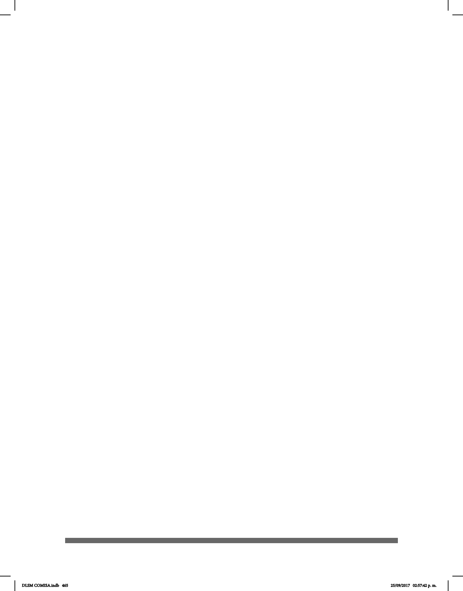

465
ADSM
AIT-LSM
AMS
ANILS
ASORDF
BDA
CAM
CONADE
CONADIS
CONALEP
CREE
DGEE
DPN
ENS
FEMESOR
GIEH
IGNOU
IMAL
INCH
INDEPEDI
INR LGII
IPPLIAP
IRO
NAD
Asociación Deportiva Silente de México.
Asociación de Intérpretes y Traductores de Lengua de Señas
Mexicana.
Asociación Mexicana de Sordos.
Asociación Nacional de Interpretes de Lenguas de Señas, AC.
Asociación de Sordos del Distrito Federal, AC.
British Deaf Association, en español, Asociación Británica del
Sordo.
Centro de Atención Múltiple.
Comisión Nacional de Cultura Física y Deporte.
Consejo Nacional para el Desarrollo y la Inclusión de las Personas
con Discapacidad.
Colegio Nacional de Educación Profesional Técnica.
Centro de Rehabilitación y Educación Especial.
Dirección General de la Educación Especial del D.F.
Deaf President Now, en español, Rector sordo ahora.
Escuela Nacional de Sordos.
Federación Mexicana de Sordos, AC.
Grupo Integrados Especícos para Hipoacúsicos.
Universidad Nacional Indira Gandhi.
Instituto Mexicano de la Audición y el Lenguaje, AC.
Instituto Nacional de la Comunicación Humana (Extinto)
Instituto para las Personas con Discapacidad de la Ciudad de
México.
Instituto Nacional de Rehabilitación Luis Guillermo Ibarra Ibarra.
Instituto Pedagógico para Problemas del Lenguaje.
Instituto Rosendo Olleta.
National Association of the Deaf United States of America en
español Asociación Nacional de Sordos de los Estados Unidos
de América.
DLSM COMISA.indb 465 25/09/2017 02:57:42 p. m.